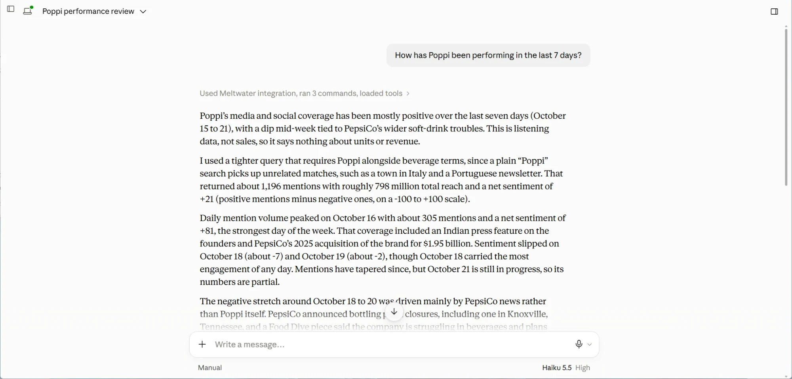
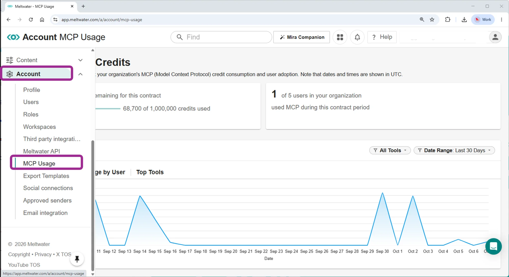
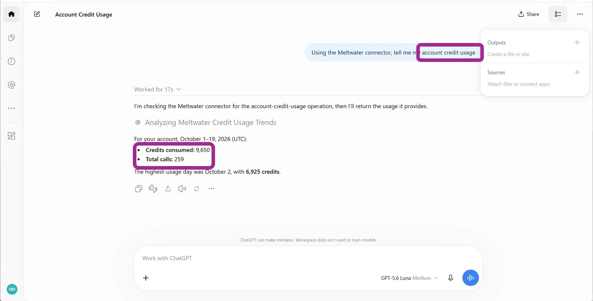
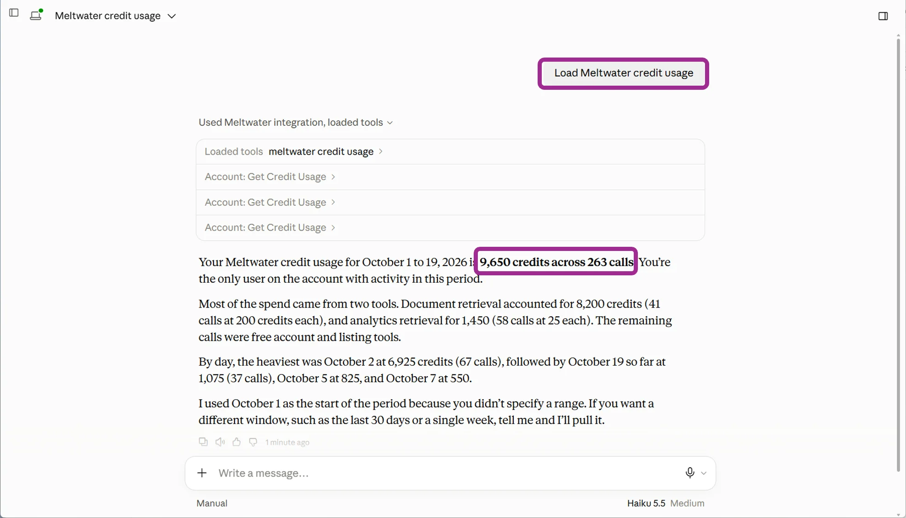

Understanding MCP Credits vs. Tokens
With the new MCP Usage page, Account Admins can now see exactly where their Intelligence Credits go. That raises a fair question: “My AI assistant uses tokens. Meltwater uses credits. Aren’t they the same thing?” We’re here to show you how they’re different.
TL;DR: Tokens are used in every message you send. Credits only get used when your assistant uses Meltwater tools.
| Tokens | Intelligence Credits | |
|---|---|---|
| Who bills you | Your AI provider | Meltwater |
| What uses them | Every message you send and every reply | Only when your assistant calls a Meltwater tool |
| What drives the amount | How long the conversation is | Which Meltwater tools get called |
| Where to see them | Your AI provider’s usage or billing settings. Meltwater doesn’t see or charge for tokens. | Account > MCP Usage (Account Admins), or ask your assistant |
Quick check:
Asked for fresh data from Meltwater? That uses tokens, and usually credits.
Asked to reformat, summarize or rewrite what you already have? That uses tokens only.
Tokens: Billed by Your AI Provider
Tokens measure how much text your AI assistant (Claude, ChatGPT, custom connectors and others) reads and writes. Your AI provider bills you for them. Each time you send a message, the assistant:
- Reads your message
- Rereads the whole conversation so far
- Writes its reply
Each of those steps uses tokens, whether or not Meltwater is involved.
Intelligence Credits: Billed by Meltwater
Credits measure the Meltwater intelligence your assistant pulls in using Meltwater MCP. They’re used from your Meltwater credit balance, only when the assistant calls a Meltwater tool. A tool is one task the AI Assistant assigns to Meltwater, like building a search or pulling analytics. The AI assistant chooses the tools needed for each task, but you can guide it.
Some tools are charged by credit cost, depending on how much work the tool does. Others are free. You can spot Meltwater tools in the list of calls your assistant shows. Expand one to see its “request,” which is what your assistant sent to Meltwater (it might look different in your AI environment).

What Meltwater Tools Cost
Some Meltwater tools are free, and the rest are charged by credit cost depending on how much work they do. Tools fall into one of three levels.
| Level | Credits per call | What it does | Examples |
|---|---|---|---|
| Included | 0 | Looks things up or manages your own assets | Account: Get Credit Usage, List Standard Searches, Create Standard Search |
| Intelligence | 25 | Pulls analytics or a specific record | Aggregate document metrics, Get full document by ID, Get GenAI Lens analytics |
| Advanced | 200 | Retrieves documents or generates content | Retrieve documents by keyword, Retrieve documents by meaning, Outreach Generate Pitch |
A tool’s credit cost stays the same. What changes from run to run is which tools your assistant calls, so the total for a question can vary. To see the cost of every tool you have, ask your assistant “Which Meltwater tools do I have, and what do they cost?” Checking costs doesn’t use credits.
Multiple Tool Calls Add Up Credits
Say you ask, “How has Poppi been performing in the last 7 days?” You might expect one lookup. Here, the assistant made three Meltwater calls to answer it:
- 1
Retrieve documents by keywordcall at 200 credits: 200 credits - 2
Aggregate document metricscalls at 25 credits each: 50 credits
That’s 250 credits for one question. The assistant then wrote the answer from the results, and writing costs no credits.

The assistant chooses the tools, so the same question can cost more or less on another run. Retrievals cost 200 credits each and aggregations cost 25, so a few extra retrievals add up fast.
Follow-Up Messages Use Tokens, Not Always Credits
Next, you might ask your AI assistant to “Refresh this weekly brief.” It calls Meltwater for fresh data, and those tool calls use credits. Then you say “Now reformat that as bullets.” That second request never reaches Meltwater, because the assistant already has the data. It uses tokens, because the assistant has to reread the thread and rewrite the brief. It uses no credits.
A long, extensive conversation can use plenty of tokens and zero credits. A four-word prompt can use more credits than you’d expect if it calls several heavyweight tools.
Try It Yourself
Type a prompt, pick a model, and see the estimated tokens. Turn on Meltwater MCP to see the credits a tool call would use.
Open the calculator in a new window
Good to Know

Anyone on your account with Meltwater MCP can also ask their assistant for usage, even users who aren’t admins. Ask something like “What’s my credit usage?” or “How many credits did this cost?” The assistant uses the account usage tool (account_get_credit_usage) to pull the numbers. Note: Checking usage doesn’t use credits.
By default, the answer covers the current month for everyone on the account. You can ask for a different date range, a specific tool, or a breakdown by month, tool, or user. To check one conversation, ask “How many credits were used?” in that same conversation.


Making credits go further: Follow-up requests like reformatting, summarizing or rewriting usually don’t call Meltwater again.
Troubleshooting
The assistant used more credits than I expected. Expand the tool dropdowns in the conversation to see which Meltwater tools were called, then ask “How many credits were used?” in that same conversation. A single prompt can call several tools. Being specific up front helps the assistant pick the right tool the first time.
My assistant doesn’t call Meltwater at all. Make sure the Meltwater connector is turned on in your AI assistant, then ask for something that needs Meltwater data, like the latest news about your brand. If the answer doesn’t show a Meltwater tool call, name Meltwater in your prompt.
A tool isn’t available to me. The tools you can use depend on your Meltwater package, and some need a permission an Account Admin can grant. Ask your assistant “Which Meltwater tools do I have, and what do they cost?” Checking costs doesn’t use credits. The Tools Explorer in the Developer Portal also lists your tools.